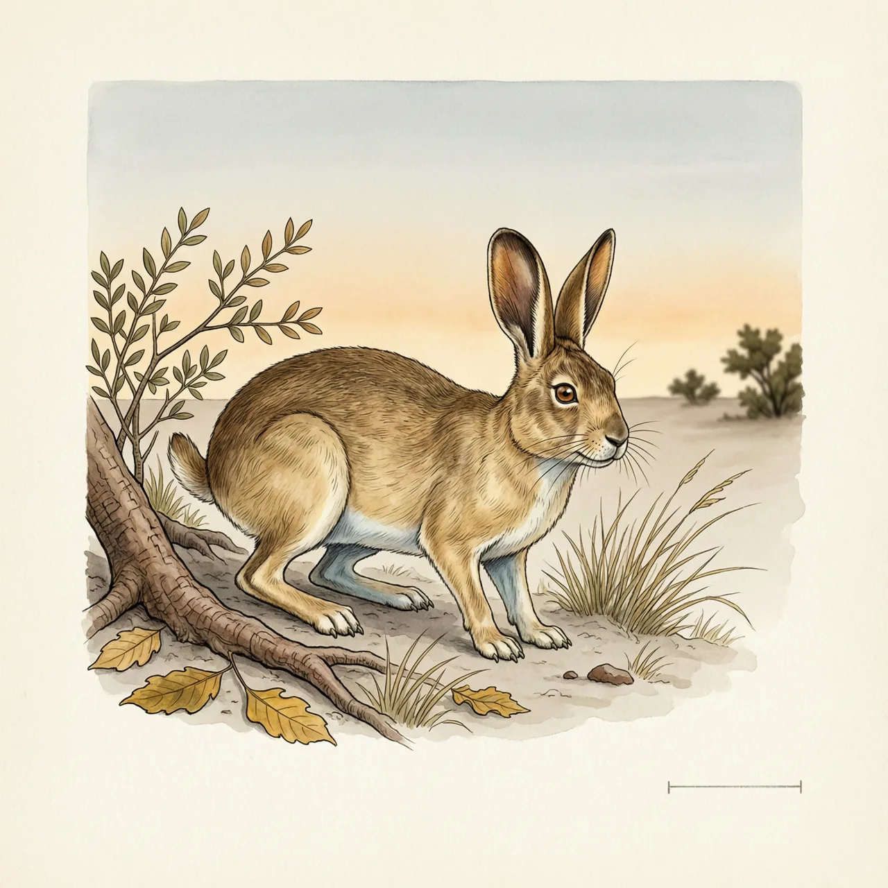
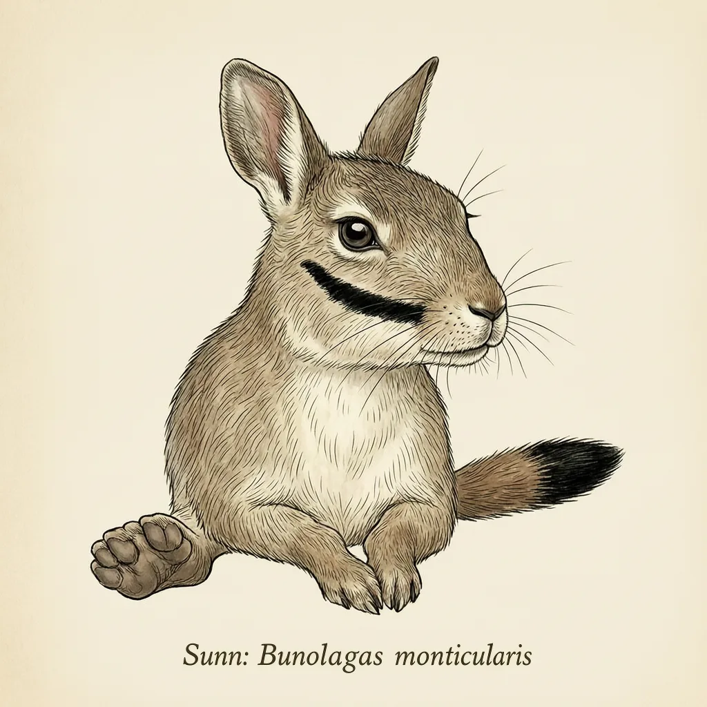

南非山兔是最稀有的哺乳动物之一，只分布在南非开普省高原的中部及南部，弗雷泽堡、萨瑟兰与西维多利亚一带还有细小群落，而整条分布带上没有一处保护区。它夜间活动，白天躲在灌丛下休息，排泄物分日夜两种，靠肠道里的细菌回收维生素B和钙磷。
傍晚的风一停，南非开普省高原的灌丛底下就钻出一头南非山兔，开始在灌木之间的空地上活动。这个物种的分布极窄，只限于卡鲁高原的中部和南部，弗雷泽堡、萨瑟兰与西维多利亚附近还散落着几个细小的群落，整个种大约只剩200只。更麻烦的是，这条窄带上没有一处被划成保护区——它仅存的活动范围，恰好都不是有人管的地方。
南非山兔是夜行动物：天一亮就停下，整日待在灌丛的遮蔽里休息，夜里才出来取食、排泄。它的另一个名字叫灌丛穴兔，说的就是这种依附——那一片灌木倒了，它白天就没有别处可待。身体也是围着这种日子长的：嘴角横跨两颊有一道黑色斑纹，腹部和喉咙呈奶白色，后脚很阔，落地时接触面大；尾巴褐色，末端发黑。
最容易让人停一下的是它的粪便。南非山兔夜间的排泄物很硬，日间的却柔软：同一只兔子，一天里排出两种质地不同的粪。差别出在消化道里的细菌——它从细菌那里获取维生素B，钙、磷这类矿物质也会被反复重用，软硬之分正是这套回收留下的痕迹。于是它白天几乎不动，躺在灌丛底下，把昨天进去过的东西再过一遍。
